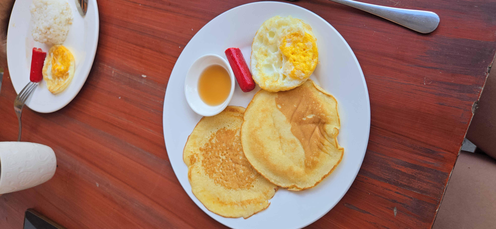

Filipinas
Filipinas
Pancit
Plato de fideos salteados muy popular y tradicional en la cocina filipina, de origen chino.
Piatti da tutto il mondo, racconti di cucina e sapori che uniscono culture.
Scopri le ricetteClicca sulle foto per aprire la ricetta completa.
Filipinas
Plato de fideos salteados muy popular y tradicional en la cocina filipina, de origen chino.

FilipinasUn desayuno Filipino tradicional y energético.
 India
India
Spezie profumate e colori intensi per una ricetta vegetariana.
 Messico
Messico
Un classico dello street food messicano, da condividere con gli amici.